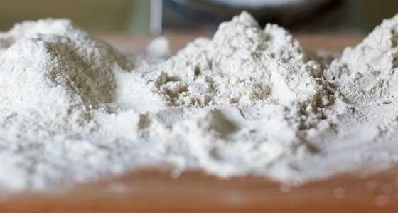
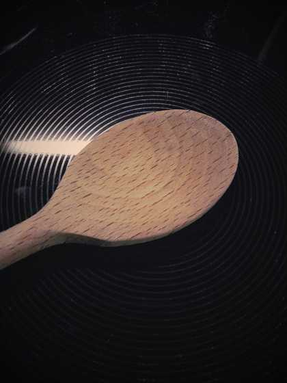
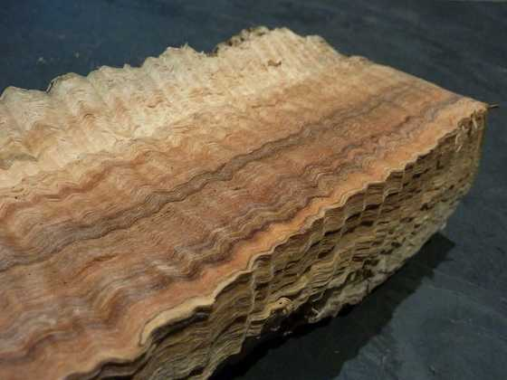
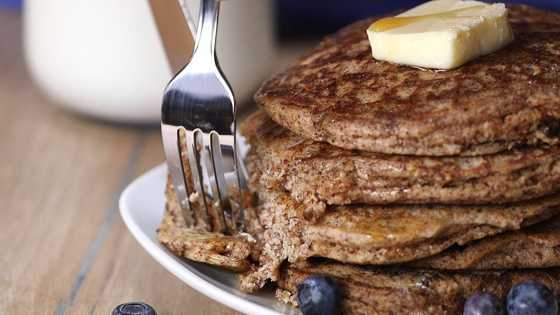
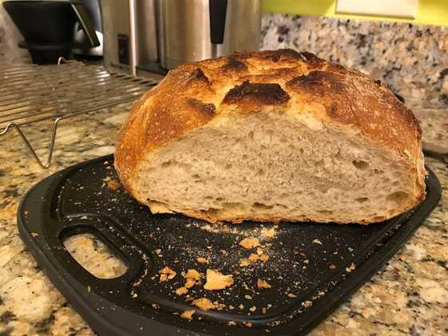

お店の由来・想い
子育て中に思い描いた、あったらいいなのカフェ。
オーナーの上村さんは、カフェで約9年働いたのち、自分のお店を開きました。子育て中に感じた「こんなカフェがあったらいいなぁ」という思いを形にし、お子さま連れでも気兼ねなく来られるお店を目指していると紹介されています。
2023年1月、長く親しまれた食堂の跡地にオープン。木のカウンターやテーブル、大きな窓から入る光、通路の広い店内で、絵本や小さな木の椅子も用意されているそうです。コーヒーは注文ごとに豆を挽き、ハンドドリップで淹れます。
店名の由来は公開情報では確認できませんでした。上記は取材記事・紹介ページの内容にもとづきます(最新の状況はInstagramでご確認ください)。











写真はフリー素材のイメージで、撮影地は不明のものです。お店を写したものではありません。縮小・切り抜きなどの加工をしています。
口コミ
こんな声が届くかもしれません。
以下は制作側が作成したイメージ例で、実在のお客様の声ではありません。
イメージ例
窓からの光がやわらかくて、ついゆっくりしてしまいました。ハンドドリップのコーヒーがおいしかったです。
イメージ例
小さな子どもと一緒でも気兼ねなく過ごせそうな、広めの通路と木の椅子が心地よい空間でした。
イメージ例
駅から歩いて行ける距離なのがうれしい。トーストとコーヒーで、散策の合間にひと休みできました。